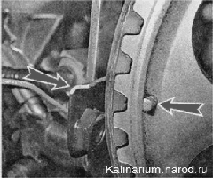
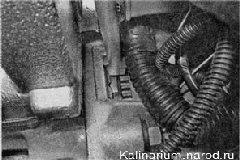
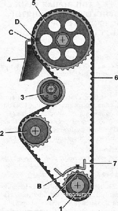
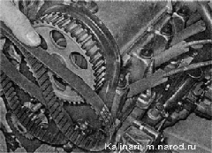
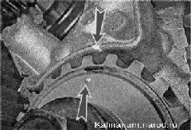

Замена ремня ГРМ двигателя 1,6 лРаботать желательно с помощником. Замена натяжного ролика ремня ГРМ описана здесьСнятие 1. Снимаем переднюю крышку ремня привода ГРМ. 2. Снимаем переднее правое колесо и правую часть брызговика двигателя. 3. Снимаем ремень генератора. 4. Торцовым ключом на 17 мм с удлинителем за болт крепления шкива поворачиваем коленчатый вал до совмещения метки на шкиве распределительного вала и выступа задней крышки ремня привода ГРМ. 5. Снимаем резиновую заглушку, установленную в верхней части картера сцепления. 6. Торцовым ключом на 17 мм отворачиваем болт крепления шкива коленчатого вала; при этом помощник отверткой, вставленной через открывшееся окно между зубьями венца маховика, удерживает вал от поворачивания. 7. Снимаем шкив. 8. Отворачиваем гайку крепления натяжного ролика и максимально ослабляем натяжение зубчатого ремня.  9. Снимаем зубчатый ремень со шкивов. 10. Вращая натяжной ролик, проверяем его состояние. Ролик, имеющий люфт и издающий сильный шум при вращении, заменяем. Установка 1. Проверяем совпадение меток на зубчатом шкиве коленчатого вала и на приливе на корпусе масляного насоса.  2. Так же убеждаемся в совпадении метки на шкиве распределительного вала и выступа задней крышки ремня привода ГРМ. 3. Устанавливаем новый ремень в следующей последовательности: не допуская поворачивания зубчатых шкивов коленчатого и распределительного валов относительно меток, надеваем ремень на шкив коленчатого вала; слегка натянув правую ветвь ремня, надеваем ее на шкив распределительного вала; пропускаем ремень с внутренней стороны натяжного ролика и надеваем на шкив насоса охлаждающей жидкости. 4. Регулируем натяжение ремня. 5. Заворачиваем болт крепления шкива коленчатого вала и, повернув коленчатый вал двигателя на два оборота, убеждаемся в совпадении меток на шкивах и двигателе. При необходимости переустанавливаем ремень. 6. Устанавливаем на место шкив коленчатого вала и затягиваем болт его крепления моментом 97,9 — 108,8 Н-м (9,9-11,1 кгс-м). 7. Устанавливаем на место переднюю крышку ремня привода ГРМ, ремень генератора и детали, снятые при разборке. |